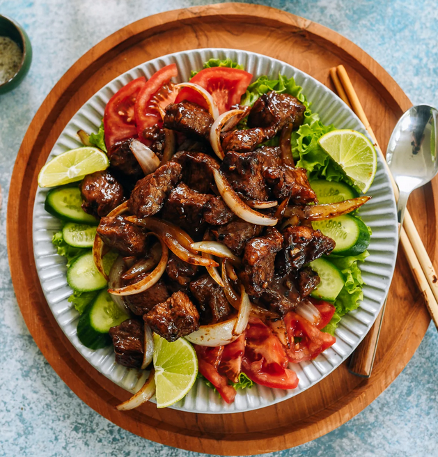

Home
Bò Lúc Lắc – Vietnamese Shaking Beef

Shaking Beef, or Bò Lúc Lắc, is a delicious Vietnamese dish of marbled cubes of beef tossed in all the good stuff: soy sauce, oyster sauce, fish sauce, a little sugar, butter, and black pepper. Everything gets shaken around in the wok to get a nice all-around sear, hence the name…Shaking Beef!
It’s savory, balanced, and incredibly tasty. Serve it on a bed of lettuce, with sliced tomato and cucumber and some steamed rice, and you’re in for a delicious meal.
Ingredients
For the beef and marinade:
- 1-1¼ pounds boneless ribeye (trimmed of any large pieces of excess fat and cut into 1 1/2-inch/4cm cubes)
- 3 garlic cloves (minced)
- 1 tablespoon palm sugar or brown sugar
- 1 teaspoon cornstarch
- 1/2 teaspoon black pepper
- 1 tablespoon oyster sauce
- 1 tablespoon fish sauce
- 2 teaspoons light soy sauce
- 1 teaspoon neutral oil (such as canola, vegetable, or avocado oil)
For rest of the dish:
- Your preferred crunchy green lettuce (such as romaine, baby gem, or butter lettuce, washed and patted dry or run through a salad spinner)
- 1 medium seedless cucumber (sliced)
- 1 large tomato (thinly sliced and cut into half moons)
- 1 lime (cut into wedges)
- 1½ tablespoons neutral oil (such as canola, vegetable, or avocado oil; divided)
- 1 medium onion (sliced into thin wedges)
- ½ teaspoon dark soy sauce
- 1 tablespoon oyster sauce
- 1 tablespoon unsalted butter
Instructions
- In a medium bowl, add the beef cubes, garlic, palm sugar/brown sugar, cornstarch, black pepper, oyster sauce, fish sauce, light soy sauce, and neutral oil. Mix with your hands to evenly coat the beef.
- Cover with an overturned plate, refrigerate, and marinate overnight or at least 8 hours.
- When you're ready to cook the beef, first prepare your lettuce, cucumbers, tomatoes, and lime.
- On a serving platter, add a bed of lettuce. Arrange sliced tomatoes and cucumbers on either side of the plate, and add the lime wedges around the perimeter of the plate.
- Heat a wok or skillet over medium-high heat until it's just smoking (or, in the case of a nonstick skillet, just heat it until hot).
- Add 1 tablespoon of oil, and sear the beef cubes for 5 minutes, tossing periodically to brown all sides.
- Transfer the beef to a bowl.
- Add the onions and another ½ tablespoon of oil. Cook for 2-3 minutes. If the pan is getting dry, add a splash of water to deglaze it.
- Add the beef back to the wok, along with the dark soy sauce, oyster sauce, and finally the butter!
- Give everything a toss to combine until the sauce is coating the beef and onions.
- Transfer to your prepared serving platter, on top of your bed of lettuce, and serve with steamed rice.
Source